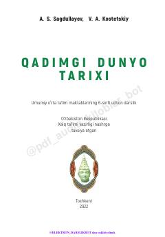

QD6-sinf o‘quvchilari uchun qadimgi dunyo tarixi bo‘yicha rasmiy maktab darsligi.
Ushbu darslik umumiy o‘rta ta’lim maktablarining 6-sinf o‘quvchilari uchun mo‘ljallangan bo‘lib, qadimgi dunyo tarixi, sivilizatsiyalar rivojlanishi va qadimiy davlatlar haqida ma’lumot beradi. Kitobda ibtidoiy jamiyatdan tortib, Qadimgi Sharq, Yunoniston va Rim imperiyasining yuksalishi hamda tanazzuligacha bo‘lgan tarixiy jarayonlar yoritilgan.